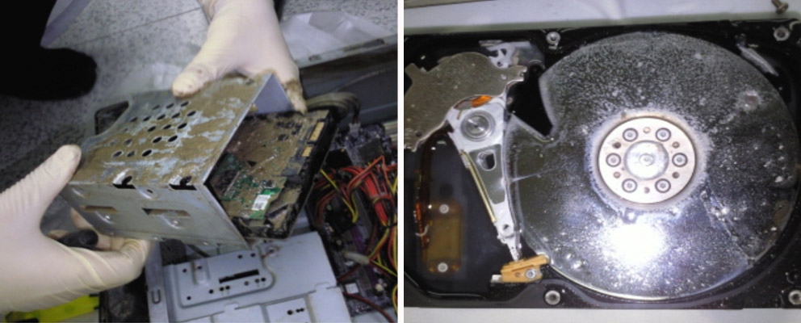
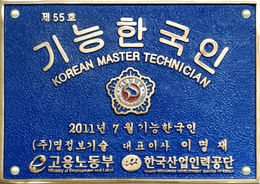
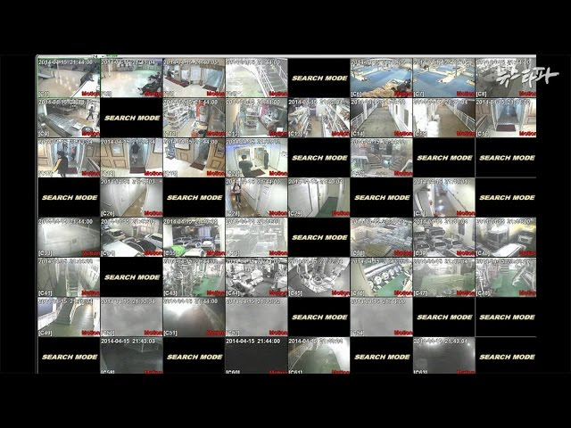
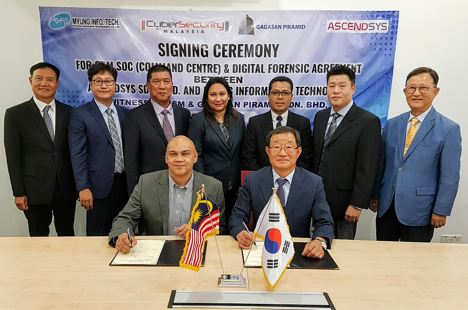
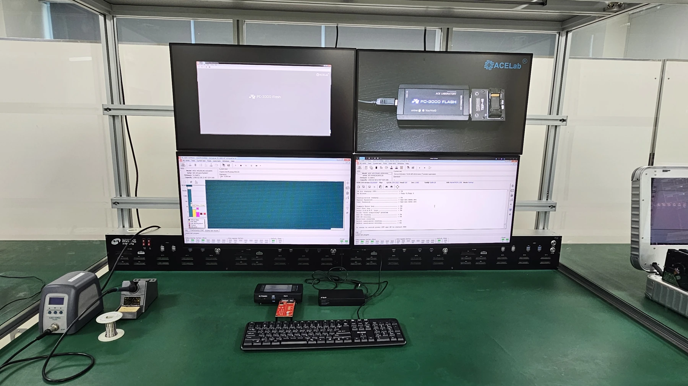
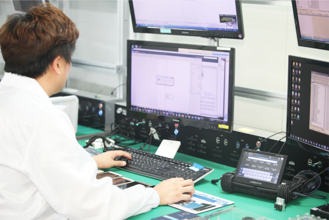
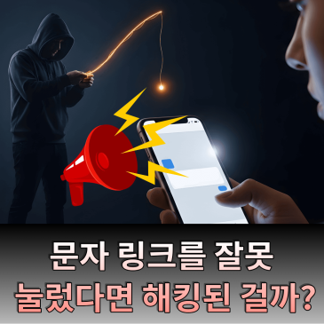

2010
천안함
기술 지원 성과침수·부식 저장매체의 CCTV 영상 복원
저장매체 분리·세척부터 영상 복원, 포렌식 검증까지 수행했습니다.
디지털포렌식 및 침해사고 전문 기업
명정보기술 디지털포렌식센터
디지털포렌식부터 침해사고 조사, 기업 보안 관리까지(주)명정보기술 디지털포렌식센터가 기업의 데이터를 책임집니다.
PRIDE OF MYUNG
재난 현장의 데이터복구부터 국가기관 기술 협력까지.
명정보기술이 쌓아온 기술과 경험을 소개합니다.

저장매체 분리·세척부터 영상 복원, 포렌식 검증까지 수행했습니다.

고용노동부와 한국산업인력공단의 제55호 이달의 기능한국인으로 선정됐습니다.
손상된 데이터 구조를 분석하고, 방송사·금융권의 피해 시스템 복구를 지원했습니다.

장기간 침수된 저장매체에서 CCTV 영상을 복원하고 포렌식 검증 후 원본을 봉인·인계했습니다.

말레이시아 사이버보안청(CSM)의 보안관제 및 디지털복구·포렌식센터 구축에 참여했습니다.
OUR SERVICE01 / 03
디지털 증거 확보부터 정밀 분석까지
OUR SERVICE02 / 03
침해 흔적을 추적해 사고 원인과 피해 범위를 확인합니다.
MDFC STORY
36년간 데이터 현장의 노하우를 상황별 글과 영상으로 전합니다.
자료 유출·증거가 궁금해요 · 추천 스토리 03

MDFC STORY · 기획 예시디지털포렌식USB 연결 기록만으로 자료 유출을 확정할 수 없는 이유
MDFC STORY · 기획 예시디지털포렌식대화의 흔적이 남았다는 것과 내용을 확보했다는 것디지털포렌식에 대해 직접 상담이 필요하신가요?

네이버 블로그보안 이야기문자 링크를 잘못 눌렀다면 해킹된 걸까? 스미싱 링크 클릭 후 확인해야 할 것침해사고 조사에 대해 직접 상담이 필요하신가요?
 MDFC STORY · 기획 예시기업 보안퇴사자 관리, 자료 보존과 권한 회수를 함께.MDFC STORY · 기획 예시기업 보안NAS가 있어도 별도 백업을 살펴보는 이유MDFC STORY · 기획 예시사고 대응계정 도용이 의심된다면, 어떤 기록을 준비할까요?
MDFC STORY · 기획 예시기업 보안퇴사자 관리, 자료 보존과 권한 회수를 함께.MDFC STORY · 기획 예시기업 보안NAS가 있어도 별도 백업을 살펴보는 이유MDFC STORY · 기획 예시사고 대응계정 도용이 의심된다면, 어떤 기록을 준비할까요?기업 보안 관리에 대해 직접 상담이 필요하신가요?
원문은 기획 예시이며, 블로그·유튜브는 기존 공식 콘텐츠입니다. 상황에 맞춰 선별한 콘텐츠를 표시합니다.